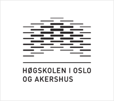
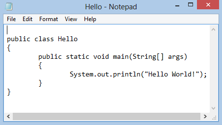

Fordi høyere utdanning, universiteter og høyskoler, har ofte litt annerledes læremåter enn det VGS har. På Høgskolen i Oslo og Akershus (HiOA) har man sett at det har vært et fellestrekk blant nye studenter som kommer rett fra VGS at de har hatt en større utfordring med å strukturere egen læring godt nok. Dette har resultert i unødvendig store vansker underveis i studiene, og man har sett at alt for mange studenter dropper ut.
Dersom man derimot blir observant og kjent med forskjellene på høyere utdanning og VGS, så er det desto lettere å komme godt igang og gjøre det bra.
Ved høyere utdanning så er det ofte mye større fokus på egenstudering. Det vil si mindre direkte veiledning av arbeid og pensum, og heller opp til hver enkelt student hva en skal bruke tiden på. Det er også sjeldent at ukesoppgaver blir sjekket (unntak ved de obligatoriske arbeidene).
Læring på eget ansvar gjør at en i stor grad selv må velge hvor mye tid og energi en skal bruke på studiene, og ikke minst hvilke fag og oppgaver som skal prioriteres. Du blir nok ikke fortalt hva du skal gjøre, utenom de obligatoriske oppgavene, her på HiOA. Men det betyr ikke at det ikke forventes at en gjør ukesoppgaver eller andre ikke-obligatoriske oppgaver. Det er like fullverdig en utdanningsintitusjon, bare med ansvar for egen læring i aller høyeste grad.
Det forventes at en setter seg inn i kurs- og programplan for studie og emner en har. Her står det detaljert hva kurset inneholder, hvilke fag en har og hvilke valgmuligheter en kan ha til valgemner. Det står også beskrevet læringsmål og hva som forventes av studentene etter endt eksamen.
Det anbefales at dere setter dere inn i hvilke emner dere skal ha, og hva som forventes etter semesterslutt.
Man har på HiOA, og helt sikkert ved andre institusjoner, mulighet for tettere kontakt på, og samarbeid med faglærer og kurskoordinatorer. Man kan eksempelvis sende eposter til foreleser, møte opp på kontoret til foreleser for å snakke der, og stille spørsmål før, under og etter forelesninger.
Det er også mulig å kunne påvirke faglærer til å endre kursopplegget slik at det vil fungere bedre for studentene. Det oppfordres til å foreslå endringer i kurs, for de aller fleste forelesere prioriterer studentenes utbytte av fagene.
På forhånd av, og periodisk underveis i kurset, les igjennom kursplanen for å få god og oppdatert oversikt over hva man bør gjøre og kunne til eksamen.
Det er ikke å forvente at faglærer går systematisk igjennom og forklarer alt pensum direkte eller klart i forelesninger. Det er lurt å belage seg på en del 'googling' og spørsmål til faglærer og Orakel/studass.
De fleste forelesere ønsker helst at en har gått igjennom pensum til enhver forelesning på forhånd, så en har en god forståelse på stoffet før man får det påfyllet og utdypende en forelesning gir.
De viktigste ressursene dere studenter vil komme til å bruke er:
Hvorfor nevnes studieteknikk, når det er det hele VGS Studiespesialiserende linje bygger på? Vel, det er fordi det viser seg at de aller fleste trenger en liten oppfrisker.
God studieteknikk kan hjelpe med å strukturere fag, oppgaver og generelt sett skolegangen bedre. Ved å tilegne seg gode vaner allerede ved studiestart kan en lettere komme seg igjennom pensum uten å måtte ty til skippertak og voldsomme eksamensnerver hvert eneste semester.
Læringsutbytte har vist seg være relatert til hvor mye aktiv deltakelse en har. Eksempelvis bare å sitte og høre på foreleser er lett, men gir veldig lite utbytte. Bare det å ta notater i forelesninger, selv om en aldri bruker notatene igjen, har vist seg å være nyttig. Men det aller beste, og kanskje mest relevant her på HiOA, er oppgaveløsning og høyttenkning og diskusjon i grupper. Da har man høy deltakelse og man får ofte høre andre tankemåter, som kanskje igjen kan hjelpe deg med å forstå stoffet på en annen måte.
Repetisjon av stoffet, kort tid etter forelesning, har vist seg å være en god måte å bekjempe glemsel på. Det er også lurt å repetere stoff underveis i kursløpet, for da sitter kunnskapen mye bedre. Og man slipper å pugge like hardt de siste ukene før eksamen.
En ting som ofte kan hjelpe studenter med å få god struktur med jevn arbeidsmengde er å lage planer for de diverse mål en har underveis i et semester. Eksempelvis lese igjennom og få innblikk i hva som er pensum i de enkelte emner, gjerne hør med andre studenter og deres erfaring, og lag en plan for hvordan du skal benytte tiden din. Hvor mange timer skal du bruke på oppgaver, på innleveringer og på arbeidsgrupper? En anbefaling er i hvert fall å sette av 60-90 minutter aktivt jobbing med pensum hver dag. Det kan være hva som helst, lesing/oppgaveløsing/arbeidsgruppe osv. så lenge det er nytteverdi av tidsbruken. Og med jevnt og daglig arbeid med stoffet blir det mye lettere å komme igjennom det en skal kunne til eksamen.
Det er også viktig å huske å ta vare på kroppen. Den virker ikke om man skal stresse seg igjennom et helt semester. Så bruk tid på å spise sunt og godt, få i deg nok væske, og husk å ta pauser. Pauser er viktig for å få klarnet opp i tankene. En gåtur eller treningsøkt kan bidra til en sunnere livsstil, som igjen kan gjøre at en presterer bedre på skolen. Så legg gjerne av litt tid til en gåtur eller treningsøkt noen ganger i uken.
Til slutt er det lurt å ta psykisk helse på alvor. På et nytt studiested med mange nye, ukjente mennesker, alle i samme situasjon som deg selv så er det kanskje skremmende ikke å kjenne noen. Og det er faktisk helseskadelig ikke å ha noen venner å sosialisere med. Det er derfor lurt å komme i kontakt og bli kjent med noen så tidlig som mulig. En god sosial omgangskrets er et viktig element i en god studenthverdag.
Oppgaver til modul 1Programmering er måten vi mennesker gir en datamaskin kommandoer og instruksjoner som forteller den hva den skal gjøre. Det er altså programmering som gjør at mennesker har nytte av datamaskiner, fordi datamaskinen utfører kun de kommandoer og operasjoner den er blitt fortalt den skal gjøre.
En instruksjon er en enkel handling en datamaskin kan utføre. Eksempelvis noe så lett som å åpne en lenke på nettet eller å skru seg selv av. Det er også mange kompliserte handlinger en datamaskin utfører. Eksempel fra spill, hvor en ofte gjøre store regneoperasjoner for å simulere verden rundt en. Måten datamaskinen gjør dette på er ved å splitte opp operasjonene og redusere kompleksiteten.
Det eneste en datamaskin faktisk kan gjøre er å lese, regne på og skrive 0-er og 1-ere. Instruksjoner leses inn i form av 0 og 1, som blir oversatt til elektriske impulser. Deretter regner den seg frem til et resultat, og neste instruks blir utført (mer grundig og bedre forklaring kommer senere i kurset).
Litt mer teknisk forklart er programmering en 'språklig' representasjon av en eller flere algoritmer. Dette gjør algoritmer leselig og håndterbart for mennesker.
"I matematikk og informatikk er en algoritme en presis beskrivelse av en endelig serie operasjoner som skal utføres for å løse et problem eller et sett med flere problemer. Hvis en prosess er algoritmisk kan den skrives som serie operasjoner som kan utføres gjennom beregninger."Med andre ord, så kan programmering sees på som å fortelle noen de stegene det kreves for å gjøre noe. For eksempel å lage en brødskive.
Generelt sagt, så er programmering en form for problemløsning. Man reduserer gjerne større problemer til så små og konkrete som mulig. På denne måten kan en lettere løse problemer som er vanskelige, gjentakende, tidkrevende eller ressurskrevende.
Et veldig relevant eksempel på hva programmering kan brukes til, er roboter. Vi er så heldige her på TKD at vi har fått en egen robot, nemlig Pepper. Det er foreløpig ikke klart for kursleder hva Pepper skal brukes til, men vi håper det er i sammenheng med IT-studiene.
Roboter kan brukes til så mangt. Du har helt sikkert hørt om roboter som sveiser bildeler, plukker opp og flytter varer eller setter sammen produkter på samlebånd. Roboter brukes også mer og mer i helse- og omsorgsindustrien. Eksempel på dette er selvmedisinerende maskiner, som automatisk dosering av insulin til diabetikere. Det utvikles også stadig vekk bedre og sikrere selvkjørende maskiner som biler, busser og robotstøvsugere som alle bruker AI (kunstig intelligens).
Programmering brukes i aller høyeste grad i underholdningsindustrien.
De aller fleste animasjonsfilmer blir i dag laget ved hjelp av programmer og datakraft. Selv 'live-action' spillefilmer blir laget med store deler datalagde spesialeffekter som gjør det lettere, billigere og tryggere å lage film.
Hvis du noen gang har spilt et dataspill (mobilspill inkludert), noe jeg tror de aller fleste kjenner seg igjen i, så har det spillet blitt laget fra bunn av ved programmering.
Dagens musikk er også utvilsomt påvirket av programmering. Det aller meste av popmusikken er laget mer eller mindre i et dataprogram. Og selv musikken som er helt autentisk, og spilt av musikere i et studio, har blitt tatt opp og behandlet (prosessert) i et dataprogram.
Alle minibanker og betalingsterminaler er programmert til å oppføre seg etter et bestemt mønster. Dette er for at det skal være lett og trygt for kunder å ta ut penger, sjekke saldo og betale for varer og tjenester.
De fleste i dag har vel smarttelefoner. Og når en ser bruksområdene en mini-datamaskin 'alle har' med deres tilhørende applikasjoner (småprogrammer), er det lett å forstå viktigheten av programmering i det samfunnet vi lever i.
Oppgaver til modul 2